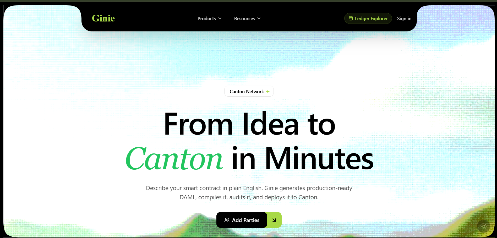

Documentation
Ginie — AI-Powered Canton dApp Generator
Ginie transforms plain English descriptions into fully compiled, deployed Daml smart contracts on Canton Network — in under 90 seconds, with zero Daml knowledge required.

Ginie homepage · canton.ginie.xyz
What makes Ginie different
Ginie doesn't just generate code — it compiles it with the real Canton SDK, runs a 5-gate security audit, and deploys it to a live Canton ledger. The output is a verified Contract ID, not a code suggestion.
⚡
Quick Start
Deploy your first Canton contract in under 5 minutes using the web interface or Python SDK.
Get started →
🔍
How the Pipeline Works
Learn how Ginie's 7-stage AI pipeline takes your description from intent to deployed Contract ID.
See the pipeline →
🛡️
Audit Layer
Understand the 5-gate pre-deployment security scan that runs on every generated contract.
See the gates →
🐍
Python SDK
Use Ginie programmatically with
SDK reference →
pip install ginie. Script contract generation and deployment.Overview
What Ginie Does
End-to-end automation
Ginie accepts a plain English description of a financial contract and returns a deployed Canton smart contract with a live Contract ID. There is no manual SDK installation, no Daml syntax to learn, and no deployment command to run. You describe — Ginie deploys.
Who it's for
🏦
Financial Teams
Prototype IOUs, bonds, repos, and DvP settlements on Canton without a Daml developer.
👩💻
Developers
Use the Python SDK or IDE extensions to integrate Canton contract deployment into your CI pipeline.
🔬
Researchers
Rapidly iterate on Canton smart contract designs and compare results on-ledger using CantonScan.
Current state
| Capability | Available | Notes |
|---|---|---|
| GinieNet (public sandbox) | Live | canton.ginie.xyz — no account required |
| 7-stage pipeline | Live | Intent → RAG → Write → Compile → Fix → Audit → Deploy |
| 5-gate audit layer | Live | Security + SCU compatibility pre-deployment |
| GitHub export | Live | Full artifact bundle committed to your repo |
| Python SDK | Live | pip install ginie |
| SCU Upgrade Agent | M2 | On-chain upgrade lifecycle management |
| Full-stack dApp Builder | M2 | Next.js frontend generation from contract interface |
| Ginie-1 (Air-Gapped Model) | Preview | Canton-native open-weight model for regulated environments |